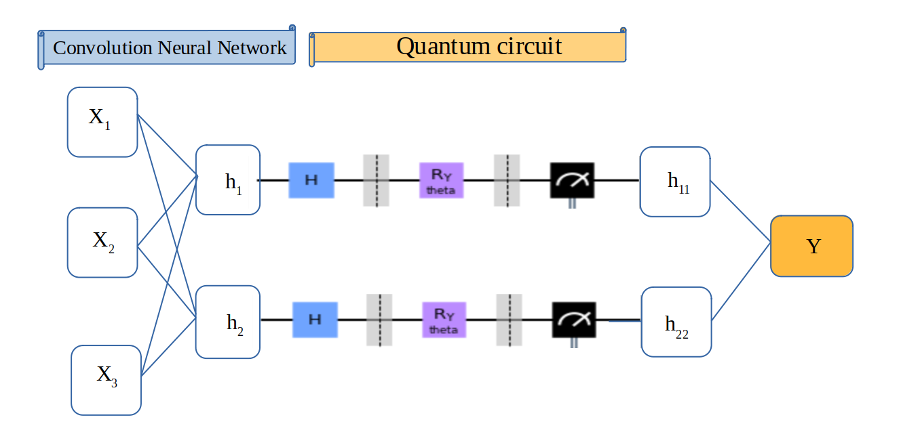
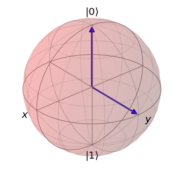
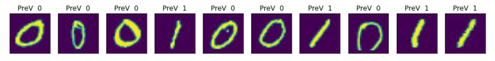

Per la serie di Convolutional Neural Network ora vediamo come integrare un modello classico creato con
PyTorch con la Quantistica Computazionale e nello specifico il framework Qiskit di IBM.
Qui prendiamo il dataset MINST contenete i numeri da 0 a 9 da cui estraiamo solo gli 0 e gli 1 per poi inserire nel modello
un layer costruito tramite un circuito quantistico che ci ritornerà l'indicazione del numero inserito.

Passiamo ad inserire il programma dopo aver visto lo schema logico sopra esposto.
import numpy as np
import matplotlib.pyplot as plt
import torch
from torch.autograd import Function
from torchvision import datasets, transforms
import torch.optim as optim
import torch.nn as nn
import torch.nn.functional as F
import qiskit
from qiskit.visualization import *
from qiskit.aqua.operators import Z, Y, X, StateFn
from qiskit import QuantumCircuit, QuantumRegister, ClassicalRegister, execute, Aer
Dopo aver importato le librerie necessarie passiamo a definire un nuovo oggetto.
Con la class Circuit definiamo un circuito quantistico con Qiskit di un qubit dove inseriamo un gate H per creare la superposition
e un gate Ry(theta) che effettua una rotazione nell'asse delle y in base al parametro theta che verrà inserito
nel circuito da un layer nel CNN come poi vedremo.

Con il metodo go faremo una simulazione del
circuito per poi calcolare il risultato(le probabilità di ogni possibile stato del qubit nel nostro caso 0 o 1).
class Circuit:
"""
quantum circuit
"""
def __init__(self, qubits, backend, shots):
super(Circuit,self).__init__()
self.circuit = qiskit.QuantumCircuit(qubits)
qub = [i for i in range(qubits)]
self.theta = qiskit.circuit.Parameter('theta')
self.circuit.h(qub)
self.circuit.barrier()
self.circuit.ry(self.theta, qub)
self.circuit.measure_all()
self.backend = backend
self.shots = shots
def go(self, theta) -> None:
job = qiskit.execute(self.circuit,
self.backend,
shots = self.shots,
parameter_binds = [{self.theta: theta} for theta in theta])
result = job.result().get_counts(self.circuit)
res = np.array(list(result.values()))
valori = np.array(list(result.keys())).astype(float)
# Calcola probabilità per ogni qubit state
probabilità = res / self.shots
# misurazione del qubit state
z_meas = np.sum(valori * probabilità)
return np.array([z_meas])
Passiamo ora a definire la class myFunction che deriva dalla Function fornita da PyTorch
per gestire le fasi di backward(backpropagation) e forward.
Da notare che vengono creati 2 staticmethod a cui si associano i ctx e non i self per rendere i 2 metodi
direttamente eseguibili come fossero funzioni senza che la class venga istanziata.
Nella backward vengono calcolati i gradients per la backpropagation mentre nella forward si chiama
il circuito definito in precedenza per ottenere il risultato e inserirlo come tensor nella NN.
class myFunction(Function):
""" Function per gestire Backward e Forward """
@staticmethod
def forward(ctx, input, circuit, shift):
""" Forward NN computation """
ctx.shift = shift
ctx.quantumCircuit = circuit
z_meas = ctx.quantumCircuit.go(input[0].tolist())
result = torch.tensor([z_meas])
ctx.save_for_backward(input, result)
return result
@staticmethod
def backward(ctx, output):
""" Backward NN computation """
input, z_meas = ctx.saved_tensors
input_list = np.array(input.tolist())
shift_right = input_list + np.ones(input_list.shape) * ctx.shift
shift_left = input_list - np.ones(input_list.shape) * ctx.shift
gradients = []
for i in range(len(input_list)):
right = ctx.quantumCircuit.go(shift_right[i])
left = ctx.quantumCircuit.go(shift_left[i])
gradient = torch.tensor([right]) - torch.tensor([left])
gradients.append(gradient)
gradients = np.array([gradients]).T
return torch.tensor([gradients]).float() * output.float(), None, None
Qui di definisce la class myQNN che partendo da nn.Module di PyTorch ci permette di definire un nuovo layer
da inserire poi nel Neural Network e farà da collante tra il NN ed il circuito quantistico tramite il metodo
forward dove la class myFunction con il metodo apply verrà chiamata in esecuzione direttamente.
class myQNN(nn.Module):
""" define layer per unire NN con Quantum circuit """
def __init__(self, backend, shots, shift):
super(myQNN, self).__init__()
self.quantumCircuit = Circuit(1, backend, shots)
self.shift = shift
def forward(self, input):
return myFunction.apply(input, self.quantumCircuit, self.shift)
Veniamo ora alla definizione della class NN cioè del Neural Network e nello specifico della Convolutional
Neural Network.
Di per se è una classica definizione ma l'ultimo layer inserito chiama la class
myQnn che come accennato prima lancia in automatico il circuito quantistico.
class NN(nn.Module):
def __init__(self):
super(NN, self).__init__()
self.conv1 = nn.Conv2d(1, 6, kernel_size=5)
self.conv2 = nn.Conv2d(6, 16, kernel_size=5)
self.dropout = nn.Dropout2d()
self.fc1 = nn.Linear(256, 64)
self.fc2 = nn.Linear(64, 1)
self.myQNN = myQNN(Aer.get_backend('qasm_simulator'), 1000, np.pi / 2)
def forward(self, x):
x = F.relu(self.conv1(x))
x = F.max_pool2d(x,2)
x = F.relu(self.conv2(x))
x = F.max_pool2d(x,2)
x = self.dropout(x)
x = x.view(1, -1)
x = F.relu(self.fc1(x))
x = self.fc2(x)
x = self.myQNN(x)
return torch.cat((x, 1 - x), -1)
Definiamo ora alcumi hyperparameter come il learning rate(% apprendimento), epochs(iterazioni del NN) e momentum per il
gradients e istanziamo il NN e definiamo il tipo di optimizer con i relativi parametri.
EPOCHS = 4
learning_rate = 0.02
momentum=0.5
model = NN()
optimizer = optim.SGD(model.parameters(), lr=learning_rate,
momentum=momentum)
MODELLO CNN CREATO
NN(
(conv1): Conv2d(1, 6, kernel_size=(5, 5), stride=(1, 1))
(conv2): Conv2d(6, 16, kernel_size=(5, 5), stride=(1, 1))
(dropout): Dropout2d(p=0.5, inplace=False)
(fc1): Linear(in_features=256, out_features=64, bias=True)
(fc2): Linear(in_features=64, out_features=1, bias=True)
(myQNN): myQNN()
)
Sotto procediamo tramite delle utility fornite da PyTorch ad estrarre un archivio di immgini di hanwritten,
numeri da 0 a 9 forniti per effettuare queste prove.
Creiamo un archivio x_train per creare il modello ed un archivio x_test per poi fare la verifica
della bontà del modello creato. Prendiamo solo gli zeri e gli uno.
x_train = datasets.MNIST(root='./data', train=True, download=True,
transform=transforms.Compose([transforms.ToTensor()]))
i = np.append(np.where(x_train.targets == 0)[0], np.where(x_train.targets == 1)[0])
x_train.data = x_train.data[i]
x_train.targets = x_train.targets[i]
x_train = torch.utils.data.DataLoader(x_train, batch_size=1, shuffle=True)
x_test = datasets.MNIST(root='./data', train=True, download=True,
transform=transforms.Compose([transforms.ToTensor()]))
i = np.append(np.where(x_test.targets == 0)[0], np.where(x_test.targets == 1)[0])
x_test.data = x_test.data[i]
x_test.targets = x_test.targets[i]
x_test = torch.utils.data.DataLoader(x_test, batch_size=1, shuffle=True)
Con la funtion train passiamo al momento in cui lanciamo il NN per creare alla fine del training il modello.
Qui definiamo prima i contenitori dove inserire le variabili e poi iniziamo ad estrarre i dati delle immagini e le inseriamo
nel model per avere i primi dati e ad ogni iterazione vengono aggiornati i dati dell'optimizer e della
loss function.
Al termine della iterazione abbiamo il modello che poi testeremo inserendo delle immagini e si vedrà
se il risultato ottenuto è uguale al dato reale.
def train(epoch):
count = []
losses= []
previsioneOk = 0
model.train()
for index, (x, y) in enumerate(x_train):
optimizer.zero_grad()
prevModel = model(x)
loss = F.nll_loss(prevModel, y)
loss.backward()
optimizer.step()
pred = prevModel.data.max(1, keepdim=True)[1]
previsioneOk += pred.eq(y.data.view_as(pred)).sum()
if index % 1000 == 0:
print(f'Train Epoch: {epoch} images {index * len(x)}/{len(x_train.dataset) } %
{ 100. * index / len(x_train) :.2f} loss {loss.item()} previsione corretta
{ 100. * previsioneOk / len(x_train):.2f}')
losses.append(loss.item())
count.append(
(index*64) + ((epoch-1)*len(x_train.dataset)))
print(f'Train Epoch: {epoch} images {index * len(x)}/{len(x_train.dataset) } %
{ 100. * index / len(x_train) :.2f} loss {loss.item()} accuracy
{ 100. * previsioneOk / len(x_train):.2f}')
Costruito il modello passiamo ora ad inserire le stesse immagini con cui il modello
è stato costruito e vediamo la percentuale di correttezza delle previsioni effettuate.
def test():
model.eval()
testLoss = 0
totTestLoss = []
previsioneOk = 0
with torch.no_grad() :
for index, (x, y) in enumerate(x_test):
prevModel = model(x)
testLoss += F.nll_loss(prevModel, y, size_average=False).item()
pred = prevModel.data.max(1, keepdim=True)[1]
previsioneOk += pred.eq(y.data.view_as(pred)).sum()
testLoss /= len(x_test.dataset)
totTestLoss.append(testLoss)
if index % 1000 == 0:
print('\nTest: Avg. loss: {:.8f}, Accuracy: {}/{} ({:.0f}%)\n'.format(
testLoss, previsioneOk, len(x_test.dataset), 100. * previsioneOk / len(x_test.dataset)))
print(f' loss {testLoss } previsione corretta { 100. * previsioneOk / len(x_test):.2f}')
for epoch in range(1, EPOCHS + 1):
train(epoch)
Risultato fase di training
Train Epoch: 4 images 12664/12665 % 99.99 loss -0.996 accuracy 99.96 %
test()
Risultato fase di testing
loss -7.856916622352382e-05 previsione corretta 99.98 %
n = 0
fig, axes = plt.subplots(nrows=1, ncols=10, sharex=True, figsize=(15, 3))
for x, y in x_test:
if n == 10:
break
prevModel = model(x)
pred = prevModel.argmax(dim=1, keepdim=True)
axes[n].imshow(x[0].numpy().squeeze())
axes[n].set_xticks([])
axes[n].set_yticks([])
axes[n].set_title(f'PreV { pred.item()}')
n +=1
